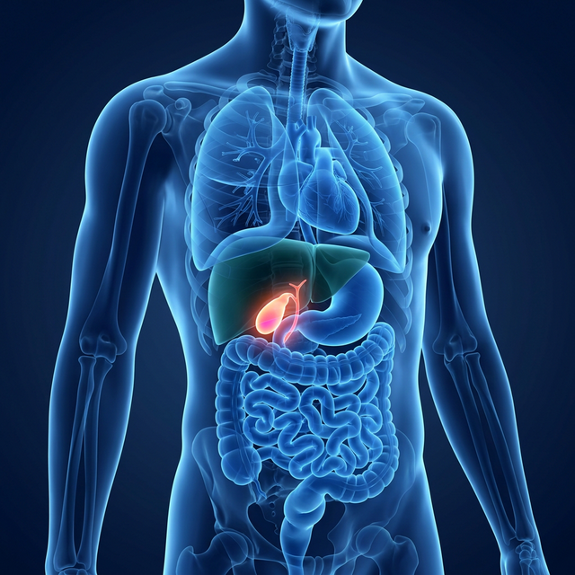

Advanced Gallbladder Surgery
Minimally invasive solutions for hernias, gallstones, and abdominal conditions. Faster recovery, less pain, and minimal scarring.
Understanding Gallbladder
The gallbladder is a small, hollow organ situated beneath the liver on the upper right side of the abdomen. It acts as a reservoir for bile, a digestive fluid produced by the liver that helps in the breakdown and absorption of dietary fats.
When you eat, especially fatty foods, your gallbladder contracts and releases bile into the small intestine via the bile ducts. This release helps emulsify fats, making them easier for digestive enzymes to process.

Common Causes & Risk Factors
Several factors contribute to the formation of gallstones. Understanding these risks can aid in prevention and management.
High Cholesterol Diet
Consuming a diet excessively high in fat and cholesterol, but low in fiber, can lead to bile that is too concentrated with cholesterol, ultimately forming stones.
Adopting a balanced, high-fiber, low-fat diet can help regulate cholesterol levels and promote healthy digestion.
Overweight or Obesity
Being overweight is one of the most significant risk factors for gallstones. It can negatively impact the body's cholesterol metabolism and gallbladder emptying.
Gradual, sustained weight loss through diet and exercise is recommended to reduce gallstone formation risks.
Rapid Weight Loss
When the body breaks down fat during rapid weight loss or fasting, the liver can secrete extra cholesterol into bile, which may lead to gallstones.
Safe, supervised weight loss plans aim for a steady loss of 1 to 2 pounds per week to minimize this risk.
Demographic Factors
Age and biological sex play a role. Being over 40, being female (due to estrogen from pregnancy or hormone therapy), and having a family history increase risks.
While these factors can't be changed, awareness helps in early detection. Regular check-ups are advised for high-risk individuals.
Identifying the Symptoms
Sudden Right-Side Pain
Rapidly intensifying pain in the upper right portion of your abdomen, often after meals.
Center Abdominal Pain
Intense, steadily worsening pain in the center of your abdomen, just below your breastbone.
Radiating Back Pain
Uncomfortable, sharp pain that radiates between your shoulder blades or deeply into your right shoulder.
Severe Nausea
Persistent nausea or active vomiting accompanied by extreme bloating and digestive discomfort.
Diagnosis Process
To definitively diagnose gallstones and rule out other causes of abdominal pain, our clinic utilizes comprehensive testing.
Physical Examination
Dr. Aloy will check for abdominal tenderness and perform specific clinical tests (like Murphy's sign) to assess gallbladder inflammation.
Abdominal Ultrasound
The safest and most common test. It uses sound waves to quickly and painlessly visualize exactly where and how large the gallstones are.
Blood Tests
Used to check for signs of severe infection, jaundice, pancreatitis, or other complications caused by gallstones blocking bile ducts.
Our Advanced Treatments
Lifestyle Modifications
A "watchful waiting" approach with a strict low-fat diet and pain management medications. Primarily advised for asymptomatic cases to prevent flare-ups.
Medication Therapy
In selective, non-surgical cases, medications may be prescribed to help dissolve small cholesterol stones, although they can take considerable time to work.
Laparoscopic Cholecystectomy
The gold standard surgical treatment. A minimally invasive procedure to remove the gallbladder with tiny incisions, resulting in minimal pain and fast recovery.
Open Cholecystectomy
A traditional surgical approach to remove the gallbladder. This is typically reserved for complex cases with severe infection or scarring that prevents laparoscopy.

Experience
Why Dr. Aloy Mukherjee is the Best Gallbladder Surgeon in Delhi?
Dr. Aloy Mukherjee is an internationally renowned Senior Consultant Surgeon with an exceptional track record of over 25 years. Specializing in Advanced Minimal Access Surgery, he is a pioneer in Laparoscopic, Bariatric, and Gastrointestinal procedures in India.
Currently practicing at the prestigious 2nd floor, Indraprastha Apollo Hospital, Room No. 1265, Gate No. 10, Jasola Vihar, New Delhi, Delhi 110076, Dr. Mukherjee focuses on providing patient-centered, ethical, and world-class surgical care utilizing the latest technological advancements including Robotic Surgery.
Patient Testimonials
Frequently Asked Questions
Are gallbladder stones dangerous if left untreated?
Yes, they can slip into the bile duct, causing severe jaundice, pancreatitis, or acute infection. Prompt removal of the gallbladder (cholecystectomy) is the safest approach.
Will my digestion be affected without a gallbladder?
The gallbladder stores bile, but your liver will continuously drip bile into the intestines. Most patients experience perfectly normal digestion within a few weeks of surgery.
What diet should I follow after gallbladder removal?
In the initial weeks, a low-fat diet is recommended to prevent bloating or diarrhea. Gradually, you can reintroduce normal healthy fats into your diet as your body adapts.
Why is Laparoscopic Cholecystectomy the standard?
It offers significantly less pain, a shorter 24-hour hospital stay, minimal scarring, and much faster return to normal activities compared to traditional open surgery.
Can gallstones be removed without removing the gallbladder?
No, the medical standard is to remove the diseased gallbladder entirely. Simply removing stones guarantees they will reform because the gallbladder itself is functionally impaired.
How soon can I return to work?
Most patients recovering from a laparoscopic gallbladder surgery can comfortably return to office or desk jobs within 5 to 7 days.